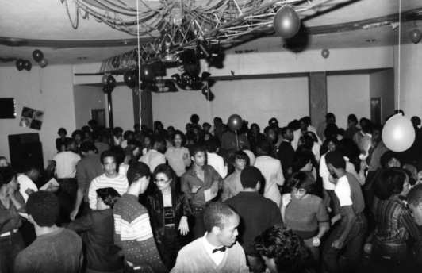
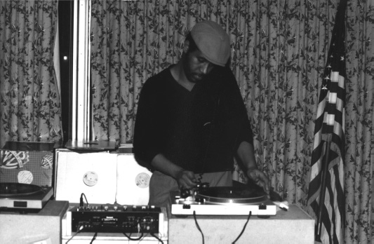

The Pre-History of Techno, 1978–1983
HEADING FOR THE HIGHEST HEIGHTS FOR THE CLIMAX OF THE NIGHT, THE PEOPLE THERE, THEY JUST WON’T QUIT, BECAUSE THE MUSIC’S REALLY IT.
“SHAREVARI,” A NUMBER OF NAMES (1981)
MAYBE THESE LUXURIES CAN ONLY COMPENSATE FOR ALL THE CARDS YOU WERE DEALT AT THE HANDS OF FATE.
“HOW TO BE A MILLIONAIRE,” ABC (1985)
Buried under both the hype and the mystery surrounding today’s techno lies a simple idea: teenage kids finding escape and release in music. This seems to be a universal experience—young people, through serious interest in music and the consumer act of purchasing an album, experience their first real sense of empowerment. In the Detroit of the late 1970s and 1980s, African American youth took that notion further than anyone had imagined. The resulting scene set the stage for techno music.
Social outlets were few for teenagers in the divested Detroit of that time. Teen dance clubs that had once existed in the suburbs had vanished, and this generation wasn’t big on being labeled “teens” anyway. The options that remained included school-sponsored dances, going to the movies, or, God forbid, hanging around with one’s family. Simply put, Detroit was a far cry from the teenage Utopias portrayed in 1980s films like Pretty in Pink and John Hughes’s Ferris Bueller’s Day Off.
Compounding this generation’s frustrations were lingering memories of Detroit’s past glory, as well as questionable attempts at revitalization. Projects intended to regenerate downtown activity, such as the high-end Renaissance Center (a combination luxury hotel/office building complex) and an inner-city mall called “Trapper’s Alley,” were at best disconnected from the rest of the city. Worse was their assumed function as cultural replacements. Instead, Detroit’s youth congregated in outlying shopping malls, especially Northland Mall in the suburb of Southfield. Such places may be second nature to teenage suburbanites, but these were residents of the nation’s Seventh City!1 Having to downshift from metropolis to the ’burbs just to be entertained or to socialize doesn’t make for a stellar sense of civic pride.
Filling this cultural void would become the preoccupation of high school students in northwest Detroit,2 who went beyond the usual high school social cliques to organize a more formalized approach to dances and parties—Detroit’s “party clubs.” These predominantly male social clubs were focused almost exclusively on organizing parties. Crews of young club members booked DJs, arranged for lights and equipment, and rented space to provide something between homespun backyard parties and professional DJ services.
Perhaps as a result of clique dynamics, a need to distance themselves from negative stereotypes, or simply the class division existing between the northwest side and the rest of the city, Detroit’s high school social clubs took on elitist characteristics. Some were more exclusive than others, but all centered on somewhat naïve ideas of sophistication, class, and distinction. Apart from some adjunct girls’ groups in their later days, the clubs were all male, and their defining concepts and styles were culled from up-scale clothiers and magazines such as Gentleman’s Quarterly and L’Uomo Vogue. Appropriately, the original four clubs were named Plush, Funtime Society, Universal, and GQ Productions.
Generally speaking, the club motif was a continuum from classic 1980s “preppy” to genuine and knock-off European labels. Hassan Nurullah, a Detroit high school student at the time, distinctly remembers the era’s staples: “For a while, everyone was wearing Max Julien jackets, Roots sidewinders [a leather boot that laces up the side], and those double-breasted shirts. We used to emphasize the shoes more—you had to have at least four or five pairs of Roots to be considered cool.” Nurullah also remembers some of the era’s stranger new wave fashions.
I remember Mike Bonner and I were at Northland [Mall] when the B-52’s first album came out. We saw this bright-ass yellow record and weird-looking people singing weirder songs: “There’s a moon in the sky and it’s called the moon.” “What is this weird crap?” we laughed. But soon we were out buying Hawaiian shirts, bright yellow cargo pants, wild sunglasses, Fiorucci “safety” jeans, and Kansai Yamamoto T-shirts—the brightest, most obnoxious stuff.
The low-end American brands might have been what the majority could afford, but the kids got much more mileage out of the unattainable. Nearly half of the clubs named themselves after Italian stores or designers, or made up similar-sounding names: Giavante, Ciabittino,3 Schiaparelli, Remnique, Courtier, Cacharel, Arpegghio, Avanté, and so on. At times, reading a club’s party flyer sounded more like name-dropping and gossiping beside Milanese and Parisian runways than it did cafeteria and hallway chatter in Detroit.
More impressive than the brand-name threads they wore, however, was the way in which these kids essentially created their own nightlife: plugging into the city’s network of clubs and halls and quickly migrating out of parents’ and grandparents’ backyards. In fact, some of the clubs’ self-styled promoters began organizing parties before they could even transport themselves to the venues. Promoter Kevin Bledsoe remembers: “The first party I ever gave was in the tenth grade, at the Chin Tiki [a supper club that sometimes rented space]. My mother drove me. She dropped me off [and then] came back and picked me up at 2:00 A.M. She didn’t know it [the party] ended at 2:00 [A.M.]—I didn’t tell her that. She was sitting outside from 12:30to 2:00, mad as I don’t know what, but she couldn’t believe how many kids were up in there.”
Bledsoe, who initially threw parties for the club Fifth Avenue New York, later formed the legendary Charivari club with his brother Brian and a few friends. Charivari took its name from a small chain of hip clothing stores in New York City that Bledsoe had visited while attending the Fashion Institute of Technology the summer after graduating from high school. Charivari is an antiquated French word meaning “hullabaloo,” but it was simply the sound of the word and its association with the store that mattered to the club and its members.
By the time Charivari began attracting a following in 1980, there were several players in the high school party game—two or three clubs per school, and multiple parties every weekend. This didn’t go unnoticed by Todd Johnson, another young Detroiter, who had already supplied a few Charivari parties with sound, lights, and DJs via his booming business Direct Drive.4 “They introduced me to the whole thing,” said Johnson. “[Charivari] didn’t know they had a gold mine on their hands . . . they were just the wild boys, the playboys.” Johnson was the one who gave Charivari their catchy tag line: “Our parties keep you together while you let yourself go.”
One venue for the parties of Charivari and other social clubs was the third floor of the Women’s City Club, a counterpart to the Detroit Athletic Club and sometime meeting place of women’s activist groups since the 1920s. This third-floor space became known as the Park Avenue Club, named for the building’s location on Park Avenue, directly behind the Fox Theater (a vestige of the golden age of movie palaces).
The six-story Women’s City Club housed a variety of music scenes on any given night, and its status as an institution explains a lot about both the scarcity of Detroit nightlife in the early 1980s and the tendency for nightlife-driven talent to cluster in the oddest urban locales. While there was next to nothing going on throughout most of the downtown area (especially along the perimeter of the then decaying theater district), the area around the Women’s City Club was a microcosm of music scenes past, present, and future. Chris Jaszczak was the building’s manager at the time, witnessing this gloriously odd convergence every week.
[A Charivari party] would be . . . on the third floor . . . and there’d be all these kids dancing their buns off. On the second floor there’d be [groups like] A Flock of Seagulls. And on the first floor we had the Detroit Jazz Center—old Detroiters down there listening to Sam Sanders, Bill McKinney, Roy Brooks, [and so on]. [Budding talent like] James Carter and Geri Allen were taking classes there . . . Marcus Belgrave was teaching . . . a lot of stuff was going on, all at the same time. It was a great building.
Although the Women’s City Club afforded the different crowds three separate entrances, there was a fair amount of intermingling: high school kids wandered down to check out the older, white punk scene, as well as to try their luck at being served at the bar. As Jaszczak points out, all-night parties with racially mixed crowds, which are hard to find even today, are reflective of a city’s creative soul—the so-called counterculture that is perpetually rediscovered and reinvented by forward-thinking youth. “That’s always the crowd that I’ve shot for ’cause I’m part of it,” he says. “You get into the labels—maybe more cosmopolitan, a little more urbane. The scenes may change but the attitude never does. There’s always that crowd that uses their heads for more than just separating their ears.”
Separating the men from the boys in the social clubs would be the young promoters, who had trained their minds on the business aspect of these parties early on. The average party drew about 400–500 people, and the bigger players drew 800–1,200. With admission fees ranging from one to twenty dollars, these kids and young adults were making a lot of money. It’s a testament to their planning and maturity that they were able to rein in their young egos—even for the duration of one party. Says Bledsoe, “The party thing just blew up and everybody was getting over. We were shopping in the Woodward Shop at Hudson’s in Northland. We even had our own salesman. My father was like, ‘I don’t even shop there!’”
One particular Charivari party, held in the Park Avenue Club on Christmas night 1980, inspired Todd Johnson to start a social club of his own—the meticulously planned club Gables.5 Named after Clark Gable, the club evoked an American icon of sophistication rather than the European leanings of other clubs. The distinct big-eared visage appeared on many a flyer, alongside the challenge, “If you miss our parties, frankly, you don’t give a damn.” But Johnson was masterminding on a much larger scale than those still in high school (he had graduated a few years earlier), and his plans for a super-club quickly grew into designs on cornering the market. As he recalls:
I wanted to control everything and tighten it up. [We were going to] specialize: GOG—Gentleman of the Galaxy—would have the jitterbug parties. Rafael would throw the cool people’s parties. Remnique would throw the GQ [Gentleman’s Quarterly] parties. [Gables would] throw the big huge parties, and Charivari would throw the wild, “get loose” parties. I had it all divided and broken down: we had all the DJs, all the equipment . . . a universal club. So if anyone got wise, we’d all come together and throw one massive party on the same night. We wanted to choke the industry and get paid.
Johnson’s scheme fell apart at a meeting with the other clubs, whose members figured that he was trying to take over, like some kind of preppy czar. Says Johnson, “Something clicked for a few of them and they said, ‘Oh, you’re trying to run everything.’ And most of ’em walked. The funny thing was that those that walked ended up joining together! They did exactly what I had said, but instead they became my rivals.” Which is not to say that Gables itself wasn’t successful. Johnson’s lighting, sound, and DJ services were already well entrenched and well oiled, making it hard to compete with his brand of vertical integration. Those who tried usually ended up having to go through Johnson in some capacity.
This tendency of high school kids and young adults to center their world around parties may seem logical in any city, but the amount of risk and responsibility assumed by this generation of Detroit youth places it in another category—in league with Berlin’s Swing Kids and the nightclub clientele of Harlem’s Renaissance. Says Nurullah, “There were no adults. Whatever problems there were, we handled them. You can go to any city you want and you’ll never find a phenomenon like that.”
In the midst of the fervor surrounding dress, music, and having a good time, the social clubs encouraged a definite component of elitism. It was innocent role-playing at its best, and exclusionary at its worst. Typical of high school kids, the cliques and clubs were as much about divisiveness as they were about banding together. Couple this with a middle-class upbringing and affluent northwest Detroit base and you had a potential problem.
As in any large metropolitan area, barriers both real and artificial define Detroit’s social strata. Divisions of class run parallel to those of geography, and sometimes overlap and conflict with one another. In the early 1980s, one such division was that between the “preps” and the “jits.” “Prep” was an obvious abbreviation for “preppy,” a term that doesn’t have the same resonance in today’s society. The preps were basically the kids in the social clubs and those attending their parties, most coming from upper-middle-class neighborhoods in northwest Detroit. The “jits” were the hip, “streetified” kids, and were generally less affluent than the preps. “Jit” was also the name of a frenetic dance, presumably descended from the 1930s jitterbug. In the context of Detroit’s African American community, the two terms were analogous to the intraracial class conflicts between the “wannabes” and “jigaboos” of Spike Lee’s School Daze and the “socs” and “greasers” in S. E. Hinton’s The Outsiders. “Jit” remains in use today, although it is more often used in reference to the dance than to a group of people.
This schism between the preps and the jits has a lot to do with Detroit’s history, and with one road in particular. Woodward Avenue, the world’s first mile of concrete roadway, defines “east side” and “west side” for Detroit and the communities along its twenty-seven-mile stretch to the northern suburb of Pontiac. The early social club scene, organized by high school kids in the northwestern part of the city, was oriented exclusively toward preps. If there was concern about the “wrong” element getting into a party, a club would distribute party flyers that gave cues as to who the “expected” crowd was. “No hats and no canes” was one common phrase that translated simply into “no jits and no thugs,” as canes were (and still are in some circles) an accessory and totem of gang members.
But while some see the elitism of the party scene as a result of pointed exclusionary policies, others trace it to voluntary group identification, an odd parallel to the elective tribalism of the rave phenomenon. Johnson describes the era’s divisiveness as more of a mind-set.
[Since] the parties consisted mainly of the northwest Detroit crowd, some of the other people would say, “Oh, Cass Tech kids are snobs or Henry Ford people think they have money.”6 But everyone was just out trying to have fun. It wasn’t so tight, but that’s how everyone thought it was, so they took themselves out of it. [It’s] a mental thing more than . . . a geographical thing: you decide what group you’re in. People separate themselves.
Given how disconnected this generation was with its own city, the importance of self-identification makes a lot of sense. As Detroit became increasingly deemphasized in favor of the suburbs, the east-west and prep-jit divisions started losing significance. Once outside the city, attitude may have played a much larger role than geography or economics. Detroit was left as a mere locale, a backdrop for different subcultures to either run their courses or blossom into larger movements.
As the northwest party crowd aged in 1982 and 1983, its events began taking on larger dimensions and the preps’ elitist airs began to disintegrate. “[The clubs] started blending as people got older and started driving,” Johnson points out. “With cars, Detroit all of a sudden becomes a big place.” Even though the preps had higher professional ambitions than their jit counterparts, they had been stuck in stagnant social patterns of their own design. Ironically, it would take east-side nightclubs to help broaden the preps’ horizons.
East-side parties and clubs were generally rowdier and funkier, if less organized, than those of the northwestern preps. The east side also carried the torch for the early electro-funk sound (later popularized by New York’s Afrika Bambaataa and the Soulsonic Force), gradually building its own scene and spreading its influence.7 Most important, the east side was more inclusive of Detroit’s youth than the west side. While parties held by west-side clubs, like the Park Avenue Club, mingled preps, punks, and jazzbos, east-side clubs like Climax and Club UBQ drew a more eclectic crowd from all areas of the city. At first, UBQ was a bit of an anomaly, as it tried to uphold the same level of exclusivity as the west-side clubs. As Keith Tucker, an east-side native and electro and techno producer, explains, “[UBQ] was trying to be a sort of elite kind of club. What they tried to do was make it upscale, and it seemed like that just didn’t work. . . . It was a nice-looking place and they handled their stuff professionally . . . but it was in a bad neighborhood—Harper over near Van Dyke. As long as I can remember, that area has always been bad.”
As the scope of the party domain widened, the crowds got less and less formal, and the parties themselves became faster, hotter, and sweatier—a definite contrast to the level of professionalism the club promoters had attained. “People had to sweat,” Johnson remembers. “It used to be that parties were cool—you’d have your shirt tucked in at the beginning of the party, and it would stay tucked. Our crowd brought in the T-shirt and the pullovers, because you couldn’t be cool with your shirt hanging out and your belt too tight and stuff. You came into a party to party . . . like it’s supposed to be.”

AN EARLY 1980S PARTY CROWD AT THE PARK AVENUE CLUB, SOMETIME BETWEEN THE “DRESS TO IMPRESS” AND “DRESS TO SWEAT” ERAS. (Todd Johnson)
Even though the protocol had been strictly preppy when it began, Johnson’s club Gables seemed to be one step ahead in terms of gauging social transformations. Just as 1980s society started to dress down, with blue jean and tennis shoe companies in full swing, the coded phrase on Gables’s party flyers shifted from “dress to impress” to “dress to sweat.” For one small instant, the preps and jits realized that they could all get along and let music and dancing be the only thing that mattered. The preps loosened their skinny ties, and the jits realized that there were actually energetic parties out there where the only ammunition belonged to the DJ. Says one anonymous “jit” from that era: “For us, going to a party [had] meant a shoot-out or getting into a fight—it was part of the territory.”
By the end of 1983, however, the mixed crowds were leading to escalating violence, and it didn’t take long for things to fall apart. As Johnson explains:
You used to see just straight fisticuffs—some guys who had a beef with one another. You might see someone bleeding. But when people started shooting, started killing people in the party scene. . . . You have to remember, parents were still monitoring this stuff. You let them read the paper and learn there’s been a shooting where they were to pick up their daughter. Do you think they’re going to [let her go to] the next party?
Outside of those organizing club events, few in the 1980s party crowd recognized the scene’s significance and how much they accomplished before violence overtook the city. Even the clubs’ promoters have mixed memories, finding that their efforts to bring people together sometimes had more negative than positive results. Johnson explains:
[The party scene] brought the crowds together momentarily. It was a brief mix. I don’t think it lasted more than a year before violence came in. And it [the violence] came in fast. When you try to expand the boundaries, when you mix volatile situations, you’re going to have violence. That destroys the party scene every time. The elusive crowd that everybody’s chasing starts disappearing—it’s not cool to get socked in the eye or shot at.
Just as Detroit’s high school kids of the early 1980s didn’t sit around complaining about having nowhere to go on weekends, neither were they content to compromise the freedom they had in music. These kids recognized how important good programming was, not only to themselves but to the city in general, and some even lobbied radio stations in an attempt to preserve a diverse radio spectrum. This willingness to make challenging stylistic choices is key to the creativity and energy of techno’s formative years. Before the psyche of Detroit became defined by incidents or avoidance of violence—and before the “gangsta” and “ghetto superstar” music of the early and late 1990s sold cartoonish reflections of urban life back to the populace—the city was still open to sounds that didn’t overtly reflect this condition. This combination of the city’s access to new sounds and the kids’ willingness to fight for them opened the way for Detroit’s acceptance of Eurodisco, a child of the 1970s disco movement and a precursor to techno.
One of the least documented periods in dance music, if not contemporary music in general, is that following the disco “fallout” of the late 1970s. By 1980, disco backlash had reached massive proportions throughout the United States, with the exception of metropolitan New York (where discos kept drawing crowds until well into the 1980s). The Midwest suddenly turned into a hostile environment for dance music, bounded by the burning of disco records at Chicago’s Comiskey Park and rock station WRIF’s issuance of DREAD cards to its listeners.8
Whether you believe disco burned itself out or was forced out of mainstream acceptance by an album rock hegemony, the music did “die” in a commercial sense. Its followers, however, were determined to at least keep the music’s creative energies alive. In order to survive, disco had to either become an “underground” phenomenon or maintain a camouflaged mainstream existence. In both the United States and Europe, disco progressed down both of these avenues, but it was the latter that would yield unpredictable results.
Disco’s continued evolution remained largely hidden from the mainstream, perhaps because the records emanated from unlikely sources such as Italy, France, and Belgium, or simply because the gay community comprised the largest segment of its audience. The resulting subgenre, which encompassed a wide spectrum of sounds (including hi-NRG),9 was summarized as “Eurodisco,” and techno and house owe as much to its electronic upgrade of traditional disco as they do to the rhythms of Kraftwerk.
Eurodisco emerged between the late and postdisco years of 1977 and 1983, when many European nations were rebuilding their indigenous pop scenes, some of which had lain dormant for decades following World War II. One of the most prolific countries during this period was Italy; its unique strain of disco had a tremendous impact on underground dance music in the United States. “Italo-disco” picked up where acclaimed Italian disco producer Giorgio Moroder had left off in the mid-1970s—in a rejection of traditional instrumentation for newer electronic forms.
Born in Ortisei, Italy, Moroder was one of the first people to own a Moog 3 synthesizer, which cost upward of $10,000 when first released. Accessing new sounds was obviously more important to Moroder than the price tag, and he wasted no time incorporating the early synthesizer into his music; as early as 1972 he scored a hit in Britain with “Son of My Father.” By 1975, he and colleague Pete Bellotte were using electronics to turn ordinary dance floor numbers into sweeping, sensual epics, like the seventeen-minute span of Donna Summer’s “Love to Love You Baby.” His film scores and compositions for Donna Summer ensured that disco would not be the one-dimensional craze of Saturday Night Fever or “The Hustle.” Unfortunately, Moroder’s creative vision wasn’t enough to stay the execution, as electronic instrumentation nearly died with disco. Along with the African American, Latino, and gay components of the music, the mainstream shunned synthesizers in favor of a calculated return to “traditional” rock ’n’ roll and stadium-caliber concert tours.
In the late 1970s, the up-and-coming Italian producers who returned to Moroder’s legacy lacked the resources and attention he had enjoyed during disco’s prime, nor did they have the benefit of Munich’s active club scene. (Moroder had moved to Munich in his late twenties.) So, just as their Detroit techno counterparts would do years later, the creators of Italodisco centered their attention on more affordable and accessible technology—experimentation with sound and effects, processed vocals, and a love for the synthesizer.
The first few years of the 1980s provided this new wave of producers with audiences still receptive to the four-count beat of disco. Italo-disco also benefited from trade restrictions that had made it nearly impossible to get imports in the United States before 1980. When this restriction was lifted, American DJs and audiences starving for new dance sounds devoured the “new” Italo-disco records (some of which were two or three years old by the time Americans heard them). Dozens of influential recordings were released under the various aliases of a few talented producers: Jacques Fred Petrus was behind “Fire Night Dance” by the Peter Jacques Band and “I’m a Man” by Macho, while Easy Going’s “Fear,” Vivian Vee’s “Give Me a Break,” and the music of Capricorn masked the production talents of Italian producer Claudio Simonetti. This type of anonymity remains a hallmark of modern electronic dance music, in which the number of artist pseudonyms has risen exponentially—well into the teens for some producers.
Like Moroder, Claudio Simonetti was influential on film scores and soundtracks of the late 1970s, tracing back to his progressive rock roots with the band Goblin. Simonetti contributed music to a number of horror films, including George Romero’s Dawn of the Dead and the Italian classic Suspiria,10 both with the band and as a solo artist. An entirely different kind of horror was the Italian “cadet meets private-school girl” film College; an EP (extended-play record) of Simonetti’s contributions to the film’s soundtrack was released independently and became a hit on the pre-house dance floors of Chicago.
With a name that brings to mind Russian Kraftwerk disciples, Alexander Robotnick was another Italo-disco favorite—a pseudonym taken on by Italian Maurizio Dami of the dance-cabaret band Avida. In the early 1980s, Robotnick hit it big in Detroit with “Problèmes D’Amour,” complete with French lyrics.11 “Problèmes” was also one of the first records to feature the Roland TB-303 synthesizer, with its quirky onboard sequencer. The “303” is ubiquitous these days, a staple on countless techno and acid house records. Long before producers discovered the power of modulating bassline wave-forms in real time, Dami used it in its “intended” fashion—simply mimicking the square waves that emanate from bass guitars. The rhythm, the bassline, and the lovelorn cries of “aua” in the chorus all made “Problèmes D’Amour” one of the most hypnotic tracks of its time.
Also from Italy was Kano, the partnership of Stefano Pulga and Luciano Ninzatti. Their self-titled EP featured “It’s a War,” one of Billboard’s top ten dance hits of 1980 and a Detroit favorite. The group’s follow-up single, “I’m Ready,” would become one of Detroit’s most revered dance cuts, as would its perfectly matched B-side, “Holly Dolly.”
A more multinational import was Liaisons Dangereuses, a Belgian band with a French name that titled most of its songs in Spanish (“Los Niños del Parque” was Detroit’s favorite). Perhaps this group’s pan-European outlook was an extension of Kraftwerk’s “Trans-Europe Express”—a song that predicted the emergence of an interconnected European continent by the end of the twentieth century. Other major influences on Detroit’s sound in particular came from the likes of Klein & MBO (“Dirty Talk”), the kitschy Belgian trio Telex (“Moskow Diskow”), and French artist Martin Circus (“Disco Circus”).
Parisian Jean-Marc Cerrone was second only to Moroder in terms of stature and influence among Eurodisco’s pioneers. He continued evolving the disco sound after Moroder had moved on to film projects and collaborations with rock artists in the 1980s. Some experts point to Cerrone’s 1976 single “Love in C Minor” as the first recording to sever all ties with traditional musical conventions. “It wasn’t a song,” says Elorious Cain of Ottawa-based ABM Records. “Up until that point there was a tremendous concentration on making songs out of disco.” Cain holds that “Love in C Minor” was the start of “conceptual disco,” from which house, techno, and myriad other styles would flow.
In Detroit, Italo-disco would be known simply as “progressive,” which aptly described the generation’s attitude toward music as well. These African American kids weren’t content to limit themselves to the R&B and “urban contemporary” records being marketed to them; just as much, if not more, of their listening was produced by the mainly white artists of Eurodisco. These records became the most popular music of the high school set, bridging the gap between Detroit’s east and west sides. The electronic sound that was so integral to Eurodisco found a perfect complement in the updated funk and R&B of Shannon (“Let the Music Play”) and of George Clinton’s solo excursions.
Another way to look at Italo-disco is as a missing link between disco and what most refer to as “new wave.” This term tends to evoke a specific style and look, but it actually conceals about a dozen variants of music that grew out of late 1970s movements, including punk, synth-pop (and its “new romantic” variant), goth, ska, rockabilly, and power-pop. The migration of listeners from disco to Italo-disco to new wave spread throughout the Midwest, with Chicago acting as chief importer for the other cities—a portal through which all manner of musical oddities passed.
Just as Italo-disco had, new wave caught on with African American audiences in Detroit like nowhere else in the United States. One could hear new wave’s offbeat and eclectic ingredients working themselves out in Detroit’s early electronic dance records, where groups like the Human League, the B-52’s, and Visage were reconciled with Eurodisco, the Midwestern funk of George Clinton, Zapp, the Ohio Players, and, subconsciously, the soul of Motown. Detroit’s preps connected with the style-conscious synth-pop bands, which had exterior styles as well polished as their sound; a subset of synth-pop—the “new romantics”—even bordered on foppish, such as the group Visage. “Fade to Grey” was Visage’s biggest hit, but it was the flip side that captured the Motor City’s attention. Simply titled “Frequency 7,” it was a surprisingly aggressive and swaggering instrumental, especially considering the new romantics’ predilection for dramatic vocals and delicate melodies. Perhaps it was the influence of former Magazine member and future Bad Seed Barry Adamson that pushed their sound in this direction.
In addition to the well-known Depeche Mode, one of the few new wave bands to have smooth continuity into the 1990s, Detroit was also receptive to Japan’s Yellow Magic Orchestra (Yukihiro Takahashi, Haruomi Hosono, and Ryuichi Sakamoto). YMO served as a more playful and purposefully contemporary analog to Kraftwerk, reacting to and incorporating more influences than the Düsseldorf group. Fuller arrangements, Beatles and Martin Denny covers (“Day Tripper” and “Firecracker”), and even an electronic ska song (“Multiplies”) were among YMO’s eclectic arsenal. In retrospect, its most interesting contribution may be the song “Technopolis,” a tribute to Tokyo as an electronic mecca, foreshadowing the concepts that Detroit natives Juan Atkins and Rik Davis would later have with the group Cybotron.
Also contributing to the new wave mix were a trio of bands from Sheffield, the British steel capital: ABC, Heaven 17, and the Human League. Looking for an antidote to harsh industrial surroundings and economic hardship, these bands adopted a mock sophistication that directly influenced Detroit’s high school social clubs, thereby indirectly influencing techno. One doesn’t have to go much further than their album titles to see the similarity to Charivari and Ciabittino: Penthouse and Pavement, The Luxury Gap, Beauty Stab, and so on—all exponents of the escapism that would come to dominate the “greed is good” era.
This is where author Jon Savage’s notion of “double refraction” becomes essential to understanding the sometimes nonlinear evolution of dance music. “Double refraction” refers to the process by which music is passed and copied back and forth between cultures. In his book England’s Dreaming: Anarchy, Sex Pistols, Punk Rock and Beyond, Savage writes of England’s pub bands in the 1970s: “Most of these groups were copying white British pop groups—like the Rolling Stones or the Yardbirds—that were themselves trying to capture the spirit of black American R&B.”12 By the same token, while it may seem strange that Detroit’s African American teenagers were listening to the angular, almost robotic disco and soul from Europe, the European groups they idolized were themselves reflections of American music.
This exchange of musical ideas back and forth across the Atlantic has been taking place since the 1950s. Europe and the United States have developed a permanent reciprocal link, with one component merely a variation on the “grass is always greener” ideal, and another having to do with real connections between people, communicated through music. By the 1980s, Detroit was serving as a crossroads for such connections, allowing for a constant exchange of musical influence between the United States and the world.
It didn’t take long for Detroit to reconcile and externalize all of the sensory input it was receiving from Europe, and in 1981, two recordings by Detroit artists introduced the earliest beginnings of techno as its own style and genre: “Sharevari,” by A Number of Names, and “Alleys of Your Mind,” by Cybotron. There’s some debate as to which record actually hit the street first, but for now discussion of “Sharevari” is more pertinent as the song was both a direct extension of Italo-disco and a tribute to Detroit’s high school party scene.
At the same 1980 Charivari party that inspired Todd Johnson to start the club Gables, a then unnamed group of energetic musicians brought an early demo version of a song called “Sharevari” for DJ Darryl Shannon to play. (They had changed the song‘s spelling to placate Brian Bledsoe, co-founder of Charivari, and to avoid potential conflicts with the Charivari clothing store chain.) Shannon started playing the record and, whether because of the song’s familiar Italo-disco sound or stripped-down brand of the same, the crowd went wild, dancing to its own tailor-made anthem. “It was hitting,” Kevin Bledsoe remembers. “Darryl Shannon played Kraftwerk’s ‘Robots’ right behind it and then he dropped Quartz’s ‘Beyond the Clouds’—by then they [the people at the party] were up dancing on the windowsills! This was [the] first night anything like that happened. I was wondering, ‘What the hell is going on?’”
According to Bledsoe, legendary radio jock Charles Johnson, also known as “the Electrifying Mojo” (or simply “Mojo”), was in the crowd that night, most likely scoping out new records popular among the high school kids. He heard “Sharevari” and convinced A Number of Names to come down to his show on radio station WGPR. Though there were only three writers credited on the record (Paul Lesley, Sterling Jones, and Roderick Simpson), a virtual army of band members showed up at the station and clogged the DJ booth. “They said, ‘What do we call ourselves? We don’t have a name,’” recalls Mojo. “I said, ‘How many of you are there? Quite a few—why don’t you call yourselves A Number of Names?’ I played the record and people went crazy over it. They [A Number of Names] actually were pushing a different song [‘Skitso’], but I said, ‘“Sharevari” is the one I’m going to play.’”
As for the musical inspiration behind “Sharevari,” one doesn’t have to look any further than one of the staples of the high school scene: Detroit DJs would work two copies of Kano’s “Holly Dolly,” repeating the sparse intro over and over again and doubling up on the chorus of “Holly . . . Dolly.” A Number of Names mimicked this interpretation of the Italo-disco classic, building on the raw rhythm track (mostly a pronounced hand clap) and the female vocal as it would sound coming from two alternating copies of the same record: “Chari Chari . . . Vari Vari.” The connection between Italo-disco, techno, and Detroit’s high school sophisticates can all be heard in this one single.13
Just as Detroit’s eclectic tastes were distilled into songs such as “Sharevari,” there was at least one band that was equally representative. Donald Fagenson and David Weiss were childhood friends whose penchant for drama, humor, and generally wreaking havoc in the Detroit suburb of Oak Park eventually coalesced into musical mischief as the group Was (Not Was). The duo’s first single, “Wheel Me Out” (released in 1980 on Ze Records), was a rich blend of rock, funk, and jazz that connected with local and foreign audiences alike. The song was a hit of sorts in Britain and became the unofficial theme song for Todd Johnson and his Direct Drive DJs.
The band’s transatlantic success led to a distribution deal with Island Records for its self-titled debut album Was (Not Was) in 1981. The album featured a host of young Detroit talent, among them future jazz great Marcus Belgrave on trumpet and flügelhorn. Weiss (aka David Was) and Fagenson (aka Don Was) did their part to continue the disco bloodline with the standout cuts “Out Come the Freaks” and “Tell Me That I’m Dreaming,” and began to perfect the balance between Fagenson’s faithful yet quirky funk and Weiss’s heartfelt, satirical lyrics.
Was (Not Was) got the “brothers” noticed by emerging media magnate David Geffen, for whom they recorded their follow-up album: 1983’s Born to Laugh at Tornadoes. This album seemed like a big-budget high school prank, as if they were asking, “I wonder how much we can get away with?” What they pulled off was an amazing contemporary funk record that incorporated more and more electronics (Oberheim OBX, Arp, and Moog synthesizers, Linn drums, and vocoders), not to mention one of the most bizarre assortments of guest vocalists in modern music. For starters, there was Mel Tormé crooning on “Zaz Turned Blue,” Mitch Ryder barking on “Bow Wow Wow Wow,” and Ozzy Osbourne rapping on “Shake Your Head (Let’s Go to Bed).” All of this playful experimentation didn’t help audiences or critics understand what was going on—and that suited the brothers Was just fine.14
It would be another five years before Was (Not Was) would become a nationally recognized name—around the time it released the single “Walk the Dinosaur” in 1988. In the interim, Fagenson began his career as a producer in earnest, working with artists such as Carly Simon. When his surrealistic side beckoned, Fagenson crafted some of the biggest local dance hits of the era. “The Beat Goes On” was released under the pseudonym Orbit, and was essentially Fagenson’s answer to Kraftwerk’s “Tour de France,” boldly built around an old Sonny and Cher hit, of all things. Nearly all the synthesizer work on that record came from another Was (Not Was) member—a young Luis Resto, who later collaborated with Eminem and won a Best Song Oscar for “Lose Yourself” in 2003. Detroiters will also remember the early vocal/rap duo Felix and Jarvis who—with Fagenson’s assistance—recorded everything from the rapid-fire new wave “Make It Rise” to the bouncy funk of “Jam the House” and “Flamethrower Rap.”15 Fagenson has since lent his talents to such high-profile projects as Bob Dylan’s Under the Red Sky, Bonnie Raitt’s Nick of Time, the original score to the film Backbeat, and the Rolling Stones’ Bridges to Babylon. Techno owes a great debt to Fagenson and Was (Not Was). Their talent in making the paradoxical work gave the Detroit sound its edge and eventually set it apart from disco and Chicago house.
The blueprint for Detroit’s techno subculture ended up being as inclusive as the sound itself (although it remained a hierarchical system, with party-goers on the bottom). An extension of an already diverse music scene, it later collided with other subcultures as the high school kids grew into adults. Techno’s full potential would be gradually realized as the central personalities of party promoter and DJ were transposed. DJs became recognized more for their “art” than for their practical skills, and began to draw crowds independent of whatever club or clique was sponsoring the party.
Through a sort of social osmosis, the crowds in east and west Detroit started coming together again in the mid-1980s, first in east-side clubs and eventually back downtown as they got progressively more diverse and musically adventurous. They migrated to clubs like the Liedernacht, located inside the old Leland Hotel. A number of clubs passed through this area, attracting mixed crowds of black, white, straight, and gay patrons. In a sense, this was where people who had come to techno early in its development—either in high school or on the radio—mingled in real time.
One man who could take credit for creating such a tight-knit night-life was the late Ken Collier,16 a legendary DJ who had perfected his craft during the disco era. Collier’s contribution to Detroit’s club scenes, to the development of its DJ talent, and to the early evolution of techno is immeasurable. He became a father figure to the generation of high school party-goers in the early 1980s, as well as to Detroit’s gay community right up until his untimely death in 1996. Collier played through decades of parties and clubs, using his knack for knowing exactly what to play to transform simple nights out into religious experiences.
Collier was just beginning to get the worldwide respect he deserved—playing the gigantic Mayday festival in Berlin—when he fell prey to a late-diagnosed diabetic condition. Following his death in 1996, there were several efforts to preserve his memory, including a tribute album on Intangible Records and a terse eulogy penned by Alan Oldham and posted on the Internet, excerpted below.17
Ken was the first person to champion Detroit techno. He and his brother Greg spun the first techno records [“Strings of Life,” “No UFOs,” etc.] at the club Todd’s, a dance music mecca that exposed the masses to new music [punk, new wave, industrial, and house on alternate nights]. After Todd’s closed, Ken held sway at Heaven, a second-floor club that’s not a mile from where I live. His “children” lived to hear him play week after week.
He also was a resident at Times Square, a downtown club where his “children” followed him after Heaven burned down. He was a great champion of our music, in the great black music tradition. When it was black and gay, before it became fashionable and suburban.
Other fans recall Collier’s incredible skill and somewhat flamboyant demeanor behind the turntables. “He was awesome,” remembers Hassan Nurullah. “He’d get that big booty going, have a little glass of cognac . . . and he didn’t do anything fancy, he just had a sense of what worked. He would keep the party booming the whole time.”
Like many young DJs of their time, high school friends Juan Atkins and Derrick May were inspired by Collier, learning directly and indirectly from him. Atkins and May formed an outsider DJ collective known as Deep Space, making a small but recognizable dent in the party system dominated by Gables and Charivari. The impact of Deep Space was limited in part by geographical distance—both Atkins and May had moved out of Detroit with their families to Belleville, a small city twenty-five miles to the southwest, making it next to impossible to get to the forefront of the party scene. Says Gables’s Nurullah, “In those days, we didn’t think much of Deep Space. They were never really the competition. They’d have the parties that we were too booked up to handle.”

DJ KEN COLLIER SCHOOLS A YOUNG DETROIT CROWD IN 1981. (Todd Johnson)
Indeed, the real opportunities for Atkins and May would come later, as they eventually became two of techno’s most influential pioneers. “All those so-called snob parties, playing for all those kids and organizations—for us it was dress rehearsal,” says May. “Even though we were young, we had serious dedication for what we were doing. That’s why Juan [Atkins] called it Deep Space. We always saw ourselves as being ‘out there.’” Perhaps sensing the potential of “conceptual disco,” Atkins had been outlining his musical ideas since high school. In addition to Deep Space, May remembers him planning other projects: “He [Atkins] was talking about Metroplex back when we were seventeen years old. He said, ‘I‘m going to make a label one day and I’m going to call it Metroplex Records.’ But I don’t believe that we were as far ahead as people want to make us believe. I think we were just being young—visionaries that didn’t want to be like everybody else.”
May’s activities included his clique KAOS,18 which was separate from and less established than Deep Space. Named for espionage operatives on the TV show Get Smart, KAOS was formed by May and friend Victor Littlejohn, who painted the group’s army jackets (most of the other clubs sported baseball-style satin jackets) and paraphernalia. May recalls, “We had amazing flyers back then, [which contained] these subliminal messages of an alternative way of thinking. We were trying to attract people that wanted to be alternative and wanted to be different, but our definition of alternative was the kind of music we were making—not so much a lifestyle . . . [but] just the way you thought about music. Far too often people associate the term ‘alternative’ with borderline rock.”
The great thing about the 1980s and the high school scene in and around Detroit was how quickly and seamlessly an interest in music or style turned into mind-sets and philosophies that encoded hopes and dreams. But if these early beginnings of techno were about freedom and escapism, it wasn’t long before they were tempered by the constraints of reality. Outside the autonomous existence of the high school kids, opportunities were few for the rest of Detroit. The city hid behind a layer of dormant tension and apathy, with its cultural, economic, and social biorhythms all in ebb. This strange condition plagued Detroit’s creative community throughout the decade, forcing the techno movement to linger at a grassroots level.
Ten years after Berry Gordy packed up Motown in 1972, Detroit was a very different city—a place where a new musical movement would be hard to spot. By the mid-1980s, Detroit’s once-great music industry had been reduced to a mere vestigial organ, with a dwindling number of studios and producers. Unlike Chicago, which had a well-established theater, comedy, and music community, Detroit was left without a staging area and its new talent with few choices: fend for yourself or move to one of the coasts.
Detroit’s failure as a musical and cultural capital was only part of the problem facing the city’s developing techno sound. Completing the ruinous picture were economic downturns and the long-term effects of racial tension. The city was left trapped in a pattern of stagnancy. The most obvious way to trace these effects is through Detroit’s “post-industrial” condition, or rather what has happened to the city since the introduction of foreign competition and the decentralization of the auto industry.
Detroit’s identity and well-being were (and are) tightly bound to the production of cars and trucks. When Japanese and German automotive companies started pursuing more aggressive business tactics in the 1970s, Detroit suffered along with its automakers as it lacked the alternative industries needed to pick up the economic slack. Plant closings, relocations, and the dreaded euphemism “downsizing” all became harsh realities for American automakers, suppliers, autoworkers and their families, and the economy in general. As the auto industry lies at the core of U.S. industry, the entire country feels the strain.
The cruel irony is that while Detroit’s automotive giants entered a bubble of recovery through the combination of high SUV margins and cheap gasoline, Detroit itself did not share in the turnaround. In fact, the automotive industry has continued to become less and less synonymous with Detroit, slowly moving its plants and headquarters outside the city limits. (Today, only General Motors still has its headquarters there.) Though many vital components of the auto industry are still located in the city and surrounding areas, “Detroit” now stands as a mere representation of its historical importance—a collective nameplate for the “Big Three” (General Motors, Ford, and Chrysler Group LLC).
Combine Detroit’s lack of economic resilience with the fear and prejudice that lingered from the riots of 1967, and the city had a recipe for disaster. As Neil Ollivierra describes in his (unpublished) novel “Reality Slap,” “When I turn onto Fisher North, the exit ramp raises me over the sleeping metropolis, speckled with lights—a false and flattering view that makes you believe, for a moment, that you’re in a real city. A real city, rather than this—an abandoned industrial hell that broke ground and somehow kept on growing.”19
Detroit’s symbolic and final straw came with Motown’s departure in 1972—there would be no cultural safety net, no solace in the voices of Marvin Gaye and Smokey Robinson. And while the auto industry did its rebuilding and rebounding throughout most of the 1980s, the loss of culture in Detroit has been much harder to remedy. There are no short-term stimulants or federal aid packages that can restore the lost sense of community or the metropolis that once was.
Not that Detroit didn’t try. The Renaissance Center and the People Mover—two pet projects of former mayor Coleman Young—at least had kernels of good ideas. Erected in 1977, the “Ren Cen” was to become the new city center and usher in a new “renaissance” for downtown Detroit. It did neither, being too expansive for Detroit’s immediate needs and too self-contained to involve a larger cross-section of communities.
Another problem that has plagued Detroit (and is perhaps as responsible for the city’s problems as racial tensions or economic shifts) is that of mass transportation. With the city’s old trolley system forced into obsolescence by the introduction of a bus system (vehicles manufactured and supplied by General Motors), Detroit needed a new complement to transit via the combustion engine. Addressing the fundamental problem of getting from point A to point B was the charge of the People Mover “line,” set in motion in 1987. Initially, its route was supposed to extend up Woodward Avenue (one of the few stretches in the metropolitan area with frequent and reliable bus service). Having run out of funding prematurely, however, it now only circles around the core of Detroit’s largely abandoned downtown—similar in some ways to Chicago’s famous loop. The People Mover is now either a $200 million toy train set or an odd, three-mile-long tour of Detroit’s neglected buildings juxtaposed with shiny new infusions of cash.
Throughout this period, Detroiters, who had once been citizens of a prosperous city, were somehow recast as statistics—especially in regard to the dwindling population that today stands at around nine hundred thousand. Residents who remained in Detroit were dehumanized and disempowered, as were the structures surrounding them as the city could no longer sustain the office, transportation, and shopping needs of a city one-and-a-half times its size.20 Throughout much of the 1980s, one of the most striking scenes to witness was Detroit’s modern ghost-town effect: once commuters cleared out of the downtown in the evening, one could walk for blocks without encountering another person. Tracing this effect in his book AfterCulture: Detroit and the Humiliation of History, Jerry Herron writes, “It wasn’t only in a physical sense that people left the city. . . . Just as they had abandoned the geographic space of the great towns, they abandoned the economy of centralized dreaming (and spending) represented by its business and cultural institutions.”21
The peculiar condition of Detroit’s architecture has been well documented and reflected in the works of several local artists and organizations, ranging from preservation societies and periodicals to the infamous installation Demolished by Neglect. Dismantled in 1987, Demolished consisted of enlarged photographs of various downtown structures, each attached to the actual building with the caption “Demolished by Neglect.” Public officials were outraged by the installation and reportedly tried to charge the artists with vandalism—apparently missing the irony that they had previously been unconcerned about the barrage of handbills covering the neglected buildings. Recent years have even brought Detroit’s architecture to the World Wide Web: a site called “The Fabulous Ruins of Detroit” takes users on a tour of Detroit’s rich architectural history.22
Techno’s future artists and producers seemed to connect on a more personal level with Detroit’s buildings than did the preservationists or guerrilla artists. The juxtaposition between their new music and ideas and this old Midwestern city would continually drive their creativity, as in this observation from techno artist Juan Atkins in 1997: “I was smack in the middle of downtown, on Griswold. I was looking at [the side of] this building and I see the faded imprint of [an] American Airlines [corporate logo], the shadow [that was left] after they took the sign down. It just brought home to me the thing about Detroit—in any other city you have a buzzing, thriving downtown.”
Aware of both the city’s former glory and its future possibilities, these artists found hope in a decaying infrastructure where none apparently existed. This optimism and empathy would run deep in techno music, even as early as Cybotron’s 1984 classic “Techno City,” on which Juan Atkins’s vocals are processed to sound ancient and mysterious, echoing the old soul of Detroit, while his lyrics welcome visitors to the city.
Such sentiments would also presumably lead techno’s pioneers to settle in a downtown neighborhood, rather than in the suburban comfort of their youth. Techno’s rebels weren’t usually overtly rebellious, but establishing a base of operations in the city center was at least a contrary gesture—they could have easily opted for the convenience of expansive industrial parks and office complexes. It’s true that downtown rents were probably much cheaper for the young artists, but there was also a sense of wanting to restore some of downtown Detroit’s artistic nucleus.
For residents and regular visitors to the city, perverse architectural sightings continue to be all too obvious and frequent, particularly during the period in which the downtown underwent massive restructuring to accommodate three new casinos, a new ballpark for the Detroit Tigers, and a football stadium for the Detroit Lions. Seemingly without much care for continuity or gradual evolution over the last thirty years, old is giving way to new—making real the farcical “Old Detroit/New Detroit” schism in the 1987 film Robocop.23 In the film, “New Detroit” is a strictly controlled, glistening Utopia, while “Old Detroit” represents lawlessness and bleak post-industrial settings. Obviously, “Old Detroit” was Hollywood’s take on the city as seen through the funhouse mirror of the news media. Techno’s interpretation of Detroit, while steeped in futuristic lore, would always be more realistic and accurate than the overview presented by both national and, sadly, even local media outlets.
In AfterCulture, Herron blames internal forces for much of Detroit’s identity crisis, citing local television stations as helping fuel wild notions held by the detached suburbs about Detroit.24 “Instead of instancing the decentered ‘technoburbs’ that are now the basis of middle class life,” writes Herron, “the news enacts a nightly eternal return, playing out an absentee fantasy of origins.” Herron’s analysis points to suburban residents who, instead of receiving real news about Detroit and their own communities, are tele-tourists on a nightly survey of the city’s violence, neglect, and erosion. Many positive developments (including techno) have gone unnoticed by TV audiences, who receive their information through such narrow and biased filters.
The hyperbole continued to escalate following the bizarre ritual of Devil’s Night arson that occurred across the city throughout the 1980s,25 and the mayhem following both the Tigers’ World Series championship in 1984 and the Pistons’ second NBA championship in 1990. It was as if violence was all that defined Detroit; the city’s notoriety as the “murder capital” still lingers, even though it is no longer statistically accurate. Detroit became a national symbol for all that was wrong with America’s cities, suffering more from the negligence of the media than from any specific criminal acts.
The city’s negative publicity culminated in two controversial and highly publicized works—Ze’ev Chafets’s book Devil’s Night and Other True Tales of Detroit and a segment on ABC Primetime Live titled “Detroit Is Burning”26—both as incendiary as the city’s fiery October nights. Despite the protests of its citizens and an especially outraged mayor, Detroit was handed its role as urban scapegoat, becoming the grand exception to the rule of American superiority and success. As Herron states, “Detroit has to be deprived of its reality so that everyone else can feel better about theirs.”
Beyond its post-industrial condition, Detroit is also victim to much older problems. As efficient as its factories are or were at any given time, the city has been inefficiently fragmented in any number of ways, ranging from transit issues to a general tendency to grow out, rather than up. And despite a diverse populace, geographical barriers and the absence of convenient mass transit have made integration and healing difficult, if not impossible. Beginning with the east-side/west-side divide along Woodward Avenue, Detroit has been compartmentalized into isolated neighborhoods, with both positive and negative effects. Neighborhoods can of course nurture families, local schools, and community involvement, but they can also turn unhealthy when residents lose the ability to think or act beyond their borders. Despite the global reach of the auto industry, there is something about Detroit that contains its collective worldview in the tangle of freeways surrounding the metropolitan area.
This attempt to be cosmopolitan while keeping a regional mind-set would become a dichotomy shared by both Detroit and techno music. Nearly all of the techno DJs and producers who emerged from Detroit still live in the city, even though their work can take them to a different city or country each weekend (or often to several countries in one trip). And for a few, even though the opportunity to travel abroad was immediately available, there was an early reluctance to leave Detroit, let alone enter into business relationships with foreign entities.
If there’s one thing to be learned from examining Detroit and its musicians, it’s how African American artists grew up in (and wanted to be a part of) a city that was increasingly alien to them. Detroit techno would become filled with longing voices and chords—sounds that must seem melancholy and even trite to European audiences who, by comparison, live in cities that still manage to thrive. In addition, much of techno’s future popularity in Europe came out of the eu(ro)phoria associated with raves and such momentous events as the fall of the Berlin Wall, forging an association between techno and elation, rather than with more somber moods.
As Detroit’s “future” actually comes to pass, following the current attempt at downtown revitalization, there may be a tendency to erase and rewrite the history contained within its old structures. Perhaps more worrisome, Detroit’s new progress threatens to obscure recent history and smaller attempts to turn things around. As Herron describes in AfterCulture, “The city [Detroit] is neither one thing nor the other, neither the empty dark places nor the shiny restored ones; it is both at once, back and forth: a land of monumental gestalt puzzle.”27 It was in the midst of this continuum that Detroit techno came to life, a music that echoes the ups, downs, and uncertain times of urban America.